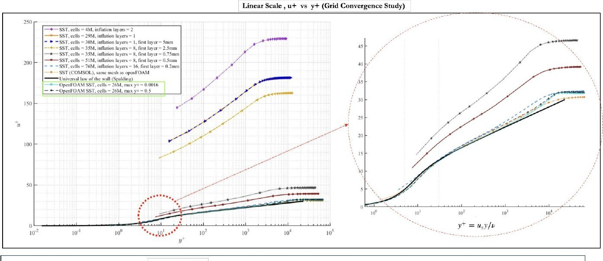
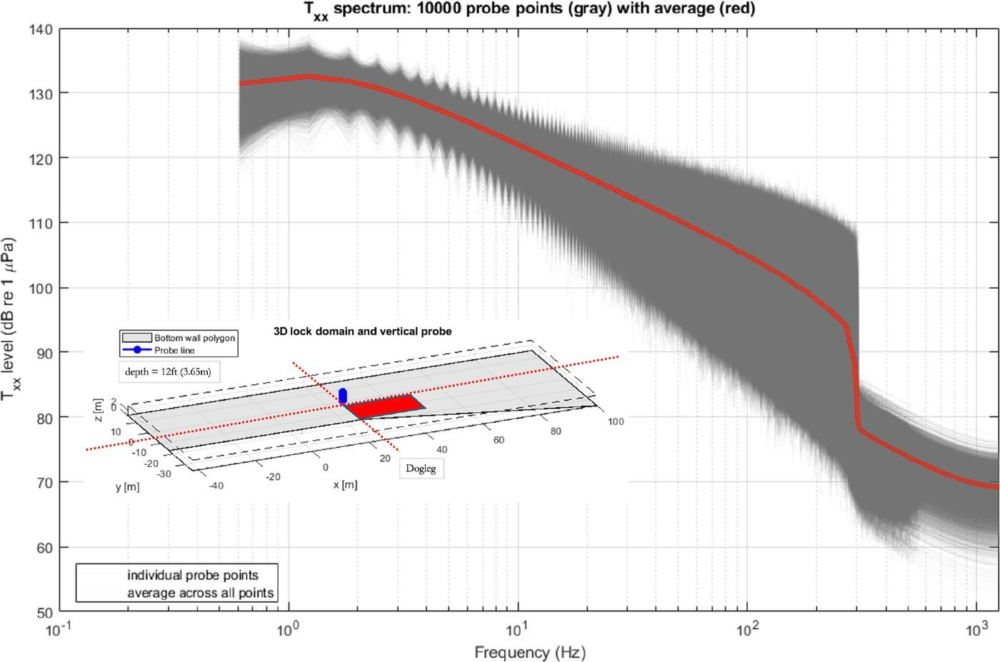
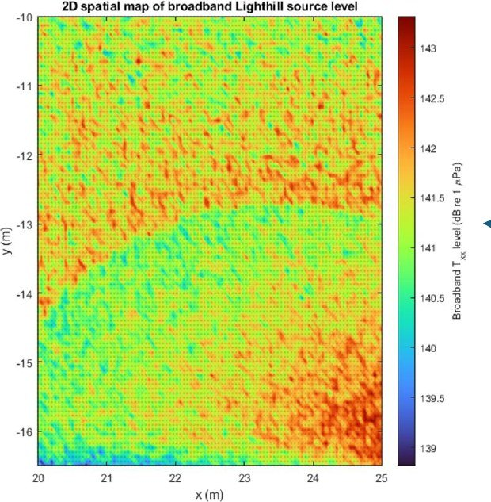
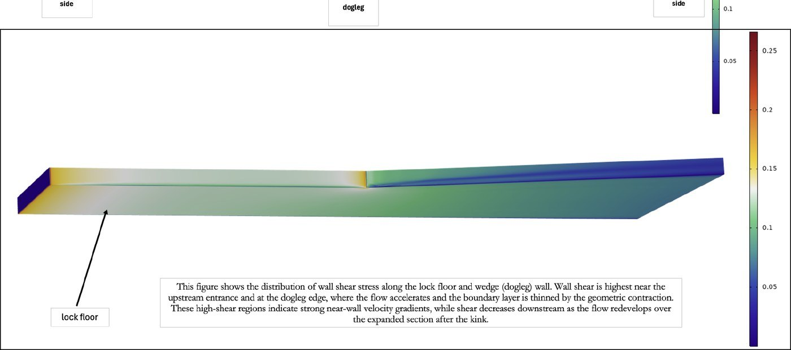

“BASIC” Underwater Acoustic Deterrent System — US Army Corps of Engineers (ERDC)
Invasive silver and bighead carp are advancing through the Mississippi River system toward the Great Lakes. Navigation locks are the choke points where they can be stopped, but the acoustic field inside one — hard-walled, reverberant, bubble-laden, and strongly sheared — is poorly predicted by free-field models. Worse, the through-flow generates its own broadband noise; if that self-noise overlaps the deterrent band, the barrier is masked by the very structure it protects.
- Built a 3D RANS model of the lock approach, dogleg contraction and chamber, solved in COMSOL and independently in OpenFOAM so no conclusion rests on a single code.
- Ran an 11-case grid convergence study from 4M to 76M cells, sweeping inflation-layer count and first-layer thickness to place y+ deliberately across wall-function and resolved-sublayer regimes; benchmarked against the universal law of the wall, Coles' law of the wake, and the velocity-defect law.
- Applied a Stochastic Noise Generation and Radiation (SNGR) method to synthesize a divergence-free turbulent velocity field from the steady RANS k and ε, then evaluated the Lighthill turbulence source tensor — recovering unsteady acoustic source information from a steady solve at a fraction of LES cost.
- Sampled 10,000 probe points through the chamber and assembled spatial maps of broadband source level; executed on an HPC cluster under SLURM with multigrid solvers and domain decomposition.
Delivered the operational BASIC system to ERDC, replacing empirical siting with a physics-based specification. Source maps show broadband Lighthill levels of 139–143 dB re 1 µPa concentrated near the dogleg shear layer, and a source spectrum peaking at 1.22 Hz — well below the carp hearing band. That separation is the design-enabling result: deterrent signals can be placed in a frequency window the lock's own hydrodynamic noise does not mask.



